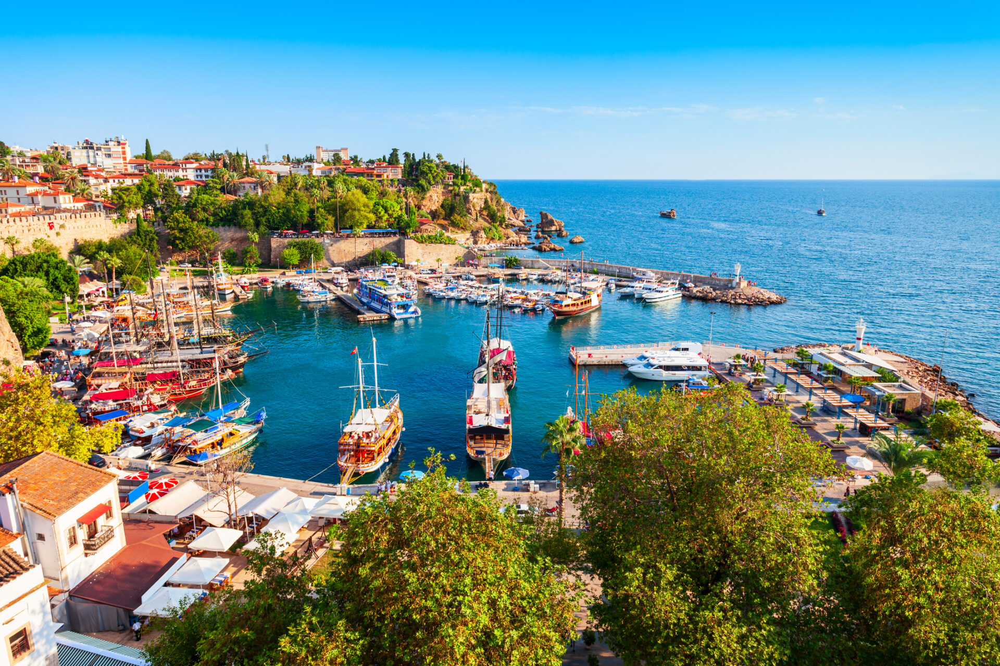

ЛЕТНА ПОНУДА

ПОПУЛАРНА ПОНУДА
Анталија, Турција
08.07 - 17.07
Модерен хотел со базени, приватна плажа и богата понуда на ресторани. Идеален избор за оние кои сакаат комплетен одмор без грижи.
ЛЕТНА ПОНУДА
Eден од најпознатите туристички градови на турското Средоземно Море, познат по прекрасното крајбрежје, богатото историско наследство и живописната атмосфера. Меѓу позначајните знаменитости се Плоштадот Република, Портата на Адријан и Часовниковата кула, додека крајбрежната зона и Старото пристаниште се идеални за прошетка. Градот нуди и богат избор на продавници, кафулиња и ресторани.
Eдна од најпознатите природни атракции во околината на Анталија, поделени на Горни и Долни Дуденски Водопади. Горните водопади се опкружени со зелена природа и пешачки патеки, додека Долните Дуденски Водопади се спуштаат директно кон Средоземното Море. Местото нуди прекрасни пејзажи и можност за прошетка, фотографирање и уживање во природата.
Историскиот стар град на Анталија, познат по тесните улички, традиционалните куќи и богатото историско наследство. Меѓу главните знаменитости се Портата на Адријан, Минарето Јивли, Кулата Хидирлик и Старото пристаниште. Калечи е идеално место за прошетка, разгледување, фотографирање и уживање во локалните продавници, кафулиња и ресторани.
Историски крајбрежен град на Средоземното Море, познат по богатото античко наследство и прекрасното крајбрежје. Меѓу најзначајните знаменитости се Античкиот театар, античките улици и Храмот на Аполон и Атина, додека старото пристаниште нуди прекрасна атмосфера за прошетка. Сиде е одлична комбинација на историја, море, локална гастрономија и слободно време.
Популарно туристичко место на турското Средоземно Море, познато по прекрасното крајбрежје, планинскиот пејзаж и медитеранската атмосфера. Кемер Марина, централниот парк и крајбрежната зона се меѓу најпознатите места за прошетка и уживање. Местото нуди и бројни продавници, кафулиња, ресторани и локални базари.
Еденод најзначајните антички градови во регионот на Анталија, познат по своето богато римско и хеленистичко наследство. Археолошкиот локалитет ги открива античката колонадеста улица, агората, римските бањи и големиот антички стадион. Перге нуди можност за прошетка низ остатоците од древниот град и запознавање со историјата на регионот.
Состанок со групата на аеродром во Скопје, 2 часа пред летот. Следува директен лет до Анталија и пристигнување на аеродромот. По завршувањето на аеродромските процедури, организиран трансфер до хотелот и сместување. По сместувањето следува време за одмор и освежување. Во попладневните часови е предвидена прва прошетка низ околината на хотелот и запознавање со местото. Вечерта останува слободна за вечера, индивидуални активности и одмор. Ноќевање во хотел.
Појадок во хотелот и организирано тргнување кон центарот на Анталија. Програмата опфаќа посета на Плоштадот Република, Портата на Адријан, Часовниковата кула и Стариот град Калечи. Следува прошетка до Старото пристаниште, со време за фотографирање и разгледување на историските улички. Потоа е предвидено слободно време за ручек, кафе и индивидуално истражување. Во попладневните часови групата се собира и организирано се враќа во хотелот. Вечерта е слободна за прошетка и одмор. Ноќевање во хотел.
Појадок во хотелот и организирано тргнување кон Водопадите Дуден. По пристигнувањето следува прошетка низ околината на Горните Дуденски Водопади, со време за разгледување и фотографирање. Потоа продолжување кон Долните Дуденски Водопади, каде што водата се спушта директно кон Средоземното Море. По посетата следува заминување кон плажата Лара, каде што е предвидено слободно време за одмор, кафе и ручек. Попладнето следува враќање во хотелот. Вечерта е слободна. Ноќевање во хотел.
Појадок во хотелот и организирано тргнување кон историскиот дел на Анталија – Калечи. Програмата опфаќа посета на Минарињата Јивли, Кулата Хидирлик и Старото пристаниште. Следува прошетка низ тесните историски улички на Калечи, со можност за фотографирање и разгледување на традиционалните куќи и локалните продавници. Потоа е предвидено слободно време за ручек, кафе и индивидуално истражување. Во попладневните часови следува организирано враќање во хотелот. Вечерта останува слободна за прошетка, вечера и одмор. Ноќевање во хотел.
Појадок во хотелот и организирано тргнување кон Сиде. По пристигнувањето следува прошетка низ историскиот дел на градот и посета на Античкиот театар, античките улици и Храмот на Аполон и Атина. Потоа следува прошетка покрај старото пристаниште и крајбрежјето. Предвидено е слободно време за ручек, кафе и индивидуално разгледување на Сиде. Попладнето може да се искористи за одмор покрај морето или шопинг во централниот дел. Во договореното време следува враќање во хотелот. Вечерта е слободна. Ноќевање во хотел.
Појадок во хотелот и организирано тргнување кон Кемер. По пристигнувањето следува прошетка низ центарот на градот и посета на Кемер Марина. Потоа продолжување кон крајбрежниот дел и централниот парк, со време за фотографирање и уживање во медитеранската атмосфера. Следува слободно време за ручек, кафе и индивидуално разгледување, како и можност за шопинг во локалните продавници и базари. Во попладневните часови групата се собира и организирано се враќа во хотелот. Вечерта е слободна за вечера и одмор. Ноќевање во хотел.
Појадок во хотелот и организирано тргнување кон Античкиот град Перге. По пристигнувањето следува разгледување на археолошкиот локалитет, со посета на античката колонадеста улица, агората, римските бањи и античкиот стадион. Патниците ќе имаат време за фотографирање и запознавање со античкото наследство на регионот. По посетата следува пауза за одмор и освежување, а потоа враќање кон Анталија. Попладнето е предвидено слободно време за ручек, кафе и шопинг. Вечерта е слободна за индивидуални активности. Ноќевање во хотел.
Појадок во хотелот, по што следува целосно слободен ден во Анталија. Патниците ќе имаат можност индивидуално да го организираат своето време според сопствените желби, за прошетка, шопинг, посета на локални продавници, кафулиња и ресторани или дополнително разгледување на градот. Денот може да се искористи и за одмор и релаксација покрај море. Вечерта е слободна за вечера, прошетка и индивидуални активности. Ноќевање во хотел.
Појадок во хотелот и одјавување согласно предвиденото време. По собирањето на багажот следува организиран трансфер од хотелот до аеродромот. По пристигнувањето следува пријавување за летот и завршување на потребните аеродромски процедури. Следува директен лет назад кон Скопје. По пристигнувањето и преземањето на багажот завршува организираното патување.